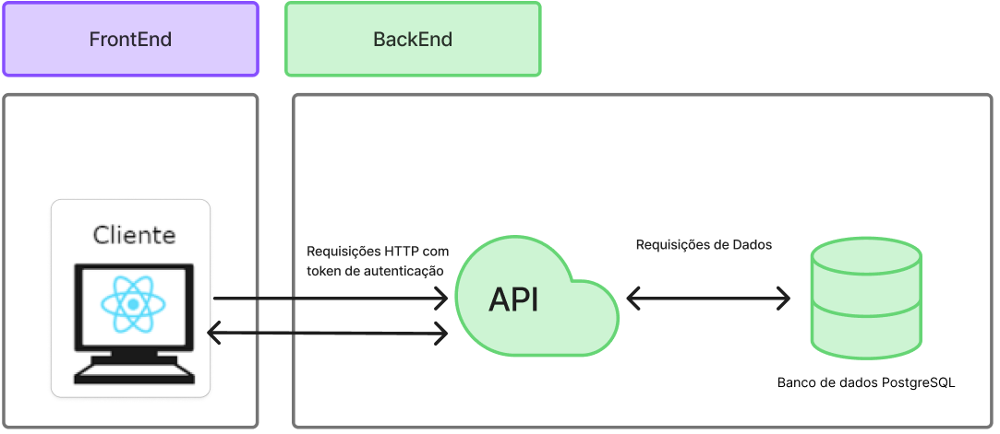
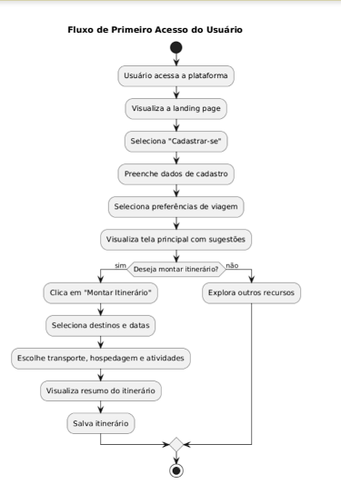
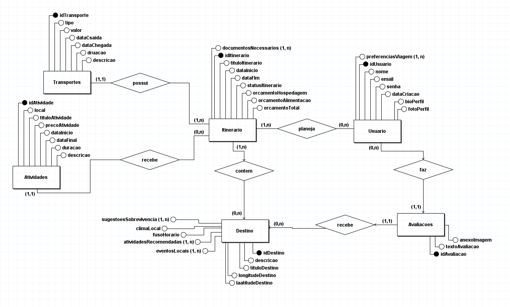
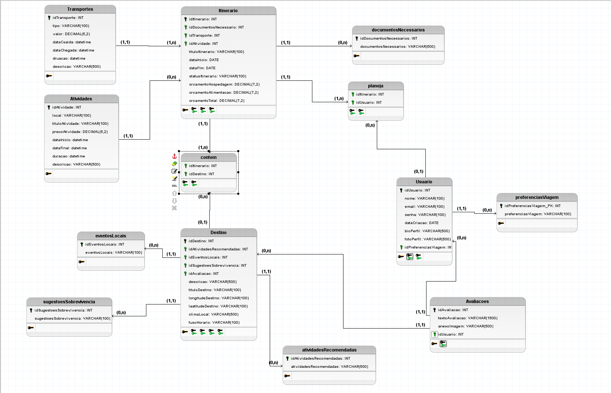

Documento de Arquitetura
Documento de Arquitetura de Software
1 Introdução
Este documento tem como finalidade descrever a arquitetura de software do projeto Vai Pela Sombra, uma aplicação web voltada para o planejamento de viagens com foco em recomendações personalizadas, eventos locais e dicas culturais. A arquitetura descrita aqui visa fornecer uma visão clara das decisões técnicas e estruturais adotadas no sistema, servindo como referência para desenvolvedores, arquitetos de software, gerentes de projeto e demais partes interessadas.
1.1 Finalidade
Este documento tem como finalidade descrever a arquitetura de software do projeto Vai Pela Sombra, uma aplicação web voltada para o planejamento de viagens com foco em recomendações personalizadas, eventos locais e dicas culturais. A arquitetura descrita aqui visa fornecer uma visão clara das decisões técnicas e estruturais adotadas no sistema, servindo como referência para desenvolvedores, arquitetos de software, gerentes de projeto e demais partes interessadas.
1.2 Escopo
O projeto está estruturado em uma arquitetura monolítica, com separação entre frontend e backend, ambos hospedados como uma única aplicação integrada.
- Frontend: construído com React e TypeScript, responsável pela interface do usuário.
- Backend: desenvolvido em Node.js com TypeScript e Express, sendo responsável pela lógica de negócios, autenticação e interação com o banco de dados.
- API Gateway/Serviço de Integração: também desenvolvido em Node.js, será responsável pela exposição dos dados e funcionalidades da aplicação de forma centralizada e segura.
- Banco de Dados: PostgreSQL, centralizando as informações sobre usuários, destinos, interesses, eventos, entre outros dados relevantes para o planejamento de viagens.
A aplicação tem como objetivo:
-
Permitir que usuários cadastrem seus interesses;
-
Oferecer recomendações personalizadas de destinos;
-
Exibir eventos locais nos destinos selecionados;
-
Fornecer dicas culturais, de saúde e segurança para viajantes;
-
Possibilitar o agendamento de itinerários personalizados de viagens;
-
Permitir o planejamento de viagens em grupo, facilitando a organização conjunta de roteiros e atividades.
1.3 Visão Geral
Este documento está estruturado em seções que abrangem a representação geral da arquitetura, metas e restrições, visões lógica e de implementação, bem como considerações de desempenho e qualidade. Também são apresentados os principais diagramas que sustentam as decisões arquiteturais, como o Diagrama de Entidade-Relacionamento e o Diagrama Lógico de Dados.
2 Representação da Arquitetura
A arquitetura utilizada no projeto será baseada em um modelo monolítico. Essa abordagem concentra os componentes da aplicação (frontend e backend) em uma única base de código, promovendo simplicidade no desenvolvimento e no gerenciamento inicial do sistema. A comunicação entre as camadas é interna, eliminando a necessidade de mecanismos de rede complexos. Essa escolha reduz a sobrecarga operacional e favorece uma entrega mais ágil nas etapas iniciais do projeto.
2.1 Diagrama de Relações

3 Metas e Restrições de Arquitetura
Nesta seção, são descritas as principais metas e restrições que guiam a arquitetura do sistema Vai Pela Sombra. As decisões aqui documentadas têm impacto direto sobre a escolha de tecnologias, frameworks, práticas de segurança, escopo funcional e usabilidade da aplicação. Essas restrições visam garantir a padronização do desenvolvimento, a consistência entre os módulos da aplicação monolítica e o cumprimento dos requisitos não funcionais definidos.
A seguir, apresenta-se uma tabela com as principais restrições técnicas e metas do projeto:
| Restrição | Ferramenta/Descrição |
|---|---|
| Linguagem | TypeScript (frontend e backend) |
| Framework | React (Frontend), Node.js + Express (Backend) |
| Plataforma | Web responsiva (navegador desktop e mobile) |
| Segurança | Os usuários serão autenticados via token JWT, com verificação em cada requisição feita ao backend via API Gateway. O acesso a funcionalidades como criação de itinerários e gerenciamento de grupos será restrito a usuários autenticados. |
| Idioma | Português (com possibilidade futura de suporte multilíngue) |
4. Visão Lógica
4.1 Visão geral: Pacotes e Camadas
A aplicação Vai Pela Sombra adota uma arquitetura monolítica, com separação clara entre as camadas de frontend (interface do usuário) e backend (lógica de negócios), mas mantidas em uma única aplicação unificada. Essa abordagem centraliza a gestão do sistema e facilita a implantação, sendo ideal para o estágio atual do projeto.
4.1.1 Model
A camada de Model representa a estrutura dos dados da aplicação e é responsável pela comunicação com o banco de dados PostgreSQL. Utilizando ORMs como Sequelize ou Prisma, essa camada permite abstrair as operações de leitura e escrita no banco, facilitando a manutenção e evitando dependências diretas com a estrutura relacional. Cada microserviço possui seus próprios modelos (ex: Usuário, Destino, Evento, Grupo).
4.1.2 Controller
Os Controllers são responsáveis por receber as requisições HTTP, processar a lógica de negócio e ccoordenar a interação entre o Model e a resposta enviada ao cliente diretamente pelo servidor backend. Essa camada centraliza a validação dos dados, chamadas de serviços auxiliares, regras de autenticação/autorização e tratamento de exceções.
4.1.3 View
A camada de View, no contexto do backend, é representada pelas respostas formatadas em JSON que são retornadas aos consumidores da API. Já a View completa da aplicação é implementada no frontend, utilizando os recursos do React para apresentar dados ao usuário de forma interativa, responsiva e dinâmica. O React atua tanto como template quanto como controlador local de estado de interface.
4.2 Diagrama de classes UML

4.3 Fluxograma 1

5 Visão de Implementação
5.1 DeR - Diagrama Entidade e Relacionamento
A seguir apresentamos o Diagrama Entidade Relacionamento do projeto

Descrição do Diagrama Entidade-Relacionamento (DER)
Usuário
- idUsuario (PK): Identificador único do usuário.
- nome: Nome completo do usuário.
- email: Endereço de e-mail do usuário.
- senha: Senha do usuário.
- dataCriacao: Data de criação do cadastro.
- bioPerfil: Texto descritivo sobre o usuário.
- fotoPerfil: Caminho ou URL da foto de perfil.
- preferenciasViagem: Lista de preferências (ex: aventura, cultura, descanso etc.).
Itinerário
- idItinerario (PK): Identificador único do itinerário.
- tituloItinerario: Nome dado ao itinerário.
- dataInicio: Data de início do planejamento.
- dataFim: Data de fim do planejamento.
- statusItinerario: Estado atual do itinerário (planejado, em andamento, concluído).
- orcamentoHospedagem: Valor reservado para hospedagem.
- orcamentoAlimentacao: Valor reservado para alimentação.
- orcamentoTotal: Soma total dos custos estimados.
- documentosNecessarios: Lista de documentos relevantes.
Destino
- idDestino (PK): Identificador único do destino.
- tituloDestino: Título ou nome do destino.
- descricao: Descrição textual.
- longitudeDestino / latitudeDestino: Coordenadas geográficas.
- climaLocal: Descrição do clima médio local.
- fusoHorario: Fuso horário do local.
Avaliações
- idAvaliacao (PK): Identificador único da avaliação.
- textoAvaliacao: Texto fornecido pelo usuário.
- anexoImagem: Caminho para uma imagem opcional.
- idUsuario (FK): Usuário responsável pela avaliação.
Transporte
- idTransporte (PK): Identificador único do meio de transporte.
- tipo: Tipo de transporte (avião, ônibus, trem etc.).
- valor: Custo estimado.
- dataSaida / dataChegada: Datas de início e fim da viagem.
- duracao: Duração estimada do trajeto.
- descricao: Detalhes adicionais.
Atividades
- idAtividade (PK): Identificador da atividade.
- local: Local onde ocorre.
- tituloAtividade: Nome da atividade.
- precoAtividade: Custo associado.
- dataInicio / dataFinal: Datas de realização.
- duracao: Duração total.
- descricao: Informações adicionais.
Entidades Complementares
- eventosLocais: Eventos ocorrendo no destino.
- atividadesRecomendadas: Sugestões específicas para o destino.
- sugestoesSobrevivencia: Dicas úteis sobre segurança e adaptação local.
5.2 DLD - Diagrama Lógico de Dados
A seguir a imagem do Diagrama Lógico de Dados do projeto

Descrição do Diagrama Entidade-Relacionamento (DLD)
Usuario
idUsuarioINT PRIMARY KEYnomeVARCHAR(100)emailVARCHAR(100)senhaVARCHAR(100)dataCriacaoDATEbioPerfilVARCHAR(500)fotoPerfilVARCHAR(500)idPreferenciasViagemINT (FK → PreferenciasViagem)
preferenciasViagem
idPreferenciasViagemINT PRIMARY KEYpreferenciasViagemVARCHAR(100)
Itinerario
idItinerarioINT PRIMARY KEYidDocumentosNecessariosINT (FK)idTransporteINT (FK)tituloItinerarioVARCHAR(100)dataInicioDATEdataFimDATEstatusItinerarioVARCHAR(20)orcamentoHospedagemDECIMAL(7,2)orcamentoAlimentacaoDECIMAL(7,2)orcamentoTotalDECIMAL(7,2)
documentosNecessarios
idDocumentosNecessariosINT PRIMARY KEYdocumentosNecessariosVARCHAR(800)
Transporte
idTransporteINT PRIMARY KEYtipoVARCHAR(100)valorDECIMAL(6,2)dataSaidaDATETIMEdataChegadaDATETIMEduracaoDATETIMEdescricaoVARCHAR(500)
Destino
idDestinoINT PRIMARY KEYidAtividadesRecomendadasINT (FK)idEventosLocaisINT (FK)idSugestoesSobrevivenciaINT (FK)idAvaliacaoINT (FK)tituloDestinoVARCHAR(100)descricaoVARCHAR(500)longitudeDestinoVARCHAR(100)latitudeDestinoVARCHAR(100)climaLocalVARCHAR(500)fusoHorarioVARCHAR(100)
Avaliacoes
idAvaliacaoINT PRIMARY KEYtextoAvaliacaoVARCHAR(1500)anexoImagemVARCHAR(500)idUsuarioINT (FK → Usuario)
Atividades
idAtividadeINT PRIMARY KEYlocalVARCHAR(100)tituloAtividadeVARCHAR(100)precoAtividadeDECIMAL(5,2)dataInicioDATETIMEdataFinalDATETIMEduracaoDATETIMEdescricaoVARCHAR(500)
atividadesRecomendadas
idAtividadesRecomendadasINT PRIMARY KEYatividadesRecomendadasVARCHAR(500)
eventosLocais
idEventosLocaisINT PRIMARY KEYeventosLocaisVARCHAR(100)
sugestoesSobrevivencia
idSugestoesSobrevivenciaINT PRIMARY KEYsugestoesSobrevivenciaVARCHAR(500)
Relacionamentos
- planeja (
idItinerario,idUsuario) - contem (
idItinerario,idDestino)
6. Tamanho e Desempenho
O sistema Vai Pela Sombra é uma aplicação Web desenvolvida para auxiliar no planejamento de viagens, oferecendo funcionalidades como cadastro de interesses, criação de itinerários personalizados, recomendações de destinos, eventos locais e planejamento em grupo. Espera-se que a aplicação seja acessada por usuários diversos, com picos de uso concentrados em períodos de férias e feriados.
Como o sistema é estruturado como uma aplicação monolítica, o dimensionamento será feito de forma conjunta. No entanto, é possível realizar ajustes na infraestrutura para otimizar desempenho conforme os pontos críticos da aplicação (por exemplo, consultas ao banco ou renderizações complexas no frontend).
Durante o período inicial de adoção, é viável hospedar a aplicação em plataformas de cloud mais simples (como o Railway ou o Render). No entanto, à medida que a aplicação cresce e atinge um público maior, recomenda-se a adoção de soluções mais robustas, como AWS, Google Cloud ou Azure, para garantir alta disponibilidade, desempenho e escalabilidade.
A arquitetura também considera o desempenho em dispositivos com recursos limitados. O frontend em React foi projetado de forma responsiva, com carregamento assíncrono de dados, para garantir uma boa experiência mesmo em conexões de internet mais lentas.
7. Qualidade
A adoção da arquitetura monolítica no projeto Vai Pela Sombra permite estabelecer metas claras de qualidade técnica, como:
- Simplicidade de implantação: a aplicação pode ser hospedada em um único servidor ou serviço de nuvem, facilitando a configuração inicial.
- Facilidade de manutenção: a centralização do código em um único projeto reduz a complexidade no rastreamento de erros.
- Organização em camadas: mesmo em uma aplicação monolítica, a separação entre camadas (model, controller, view) garante clareza estrutural.
- Escalabilidade inicial adequada: embora não permita escalonamento independente de componentes, a arquitetura atende bem ao volume esperado nos primeiros ciclos do projeto.
- Custo reduzido de infraestrutura: o modelo monolítico reduz a necessidade de serviços distribuídos e simplifica o uso de ferramentas de CI/CD.
- Entrega contínua: a arquitetura favorece a integração contínua e entrega contínua (CI/CD), otimizando o processo de deploy e reduzindo o tempo entre desenvolvimento e disponibilização em produção.
Esses aspectos contribuem para a confiabilidade e longevidade da aplicação, tornando-a apta para evoluir conforme as necessidades dos usuários.
8 Referências
Tabela de Versionamento
| Versão | Data | Descrição | Autor(s) |
|---|---|---|---|
| 1.0 | 25/04 | criação inicial do documento de arquitetura | Pablo Guilherme |
| 1.1 | 28/04 | adicionando diagramas DER, DLD e de Relações e descrições do banco de dados | Pablo Guilherme |
| 1.2 | 07/05 | Correções para o modelo monolitico, alterações na modelagem | Pablo Guilherme |
| 1.3 | 18/05 | Adicionando diagramas | Pablo Guilherme |